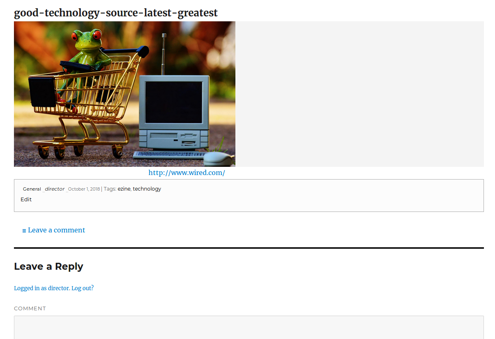
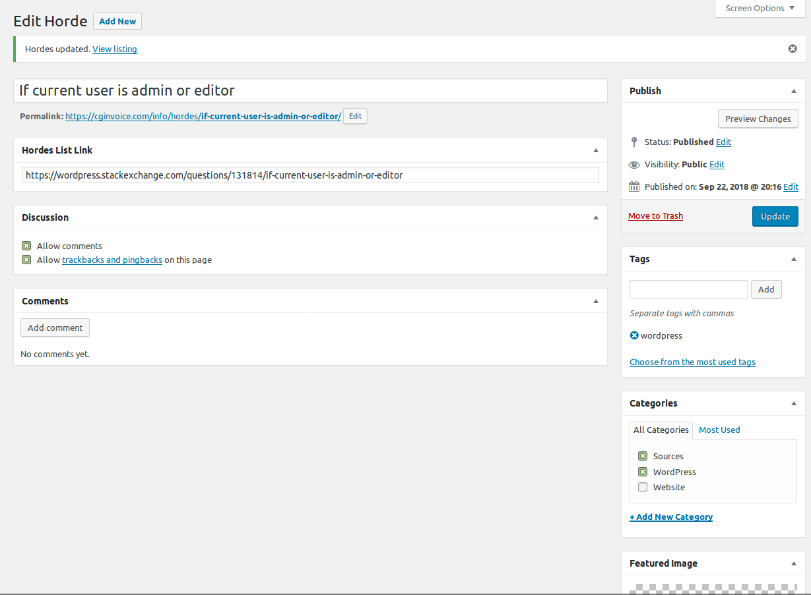
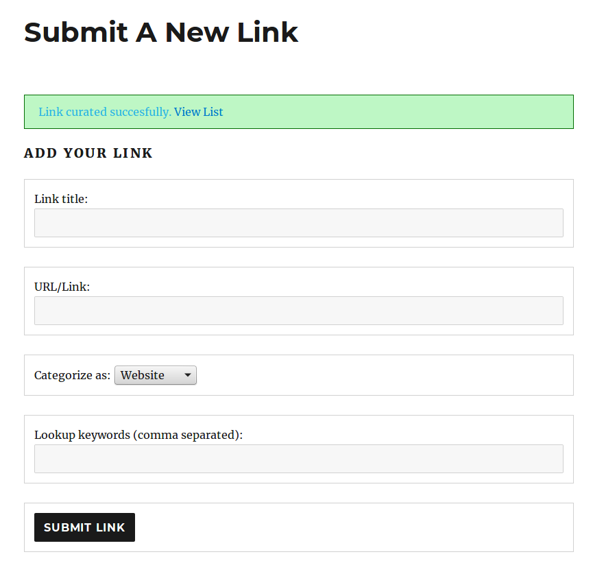
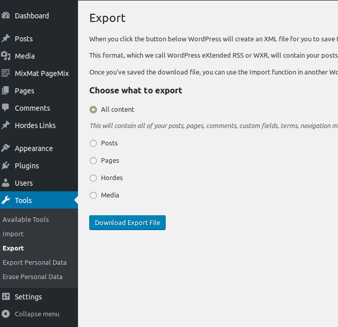

Helpful Information to get you started
- Login Options
- Upon install of Hordes you may want to set the option to redirect upon login so that you can go directly to the form page.*
- Setup
- This section describes how to install the plugin and get it working.
- 1. The shortcode to add inside of your post or page to show list is: [hordes_list]
- 2. The shortcode to add inside of your post or page to show a custom alphabetic search bar is: [hordes_search_bar]
- 3. To add a front end form to a page use shortcode: [hordes_submit_post]
- 4. Go through all options in Hordes Settings to activate what you want to use.
- Check to not show favicons in the Tall list (Optional)
- By removing favicons in your list it saves some bandwidth. Favicons are loaded from the Google favicons generator. More info at: https://www.labnol.org/internet/get-favicon-image-of-websites-with-google/4404/
- Check to Show a lower profile list of links.
- Shorter list displays only the title and the link. .
- Color for List Title
- If field is left unchanged then the titles will stay the same as the theme default titles color.
- Color for List Links
- Colors can be set to help brand your page to match your theme.
- What Page is shortcode 'hordes_list' on?
- This must be set if you want a link on the form page. The link will show on the popup "Success" message after submitting your new link.
- What Page is shortcode 'hordes_submit_post' on?
- Set page to be redirected upon login. Turn on or off Using the next setting below.
- This is only a convenience to administrators to save time when you are in a hurry to add links.
- Redirect on Login
- Check to Redirect directly to Form Submit Page. Only works for logged In Administrators.
- Front Side Submit Form
- To add a front end form to a page use shortcode: [hordes_submit_post]
The form will allow you to add title, link and tags to your post, but, only Administrators and Editors will see the form on the public side of your Website. A Featured Image maybe added to every listing but you will need to do this from the editor so that you can control the assets for each picture. - Show Alpha Checkbox Search Bar
- The shortcode to add inside of your post or page to show a custom alphabetic search bar is: [hordes_search_bar]
Works for categories as well as links and titles.








